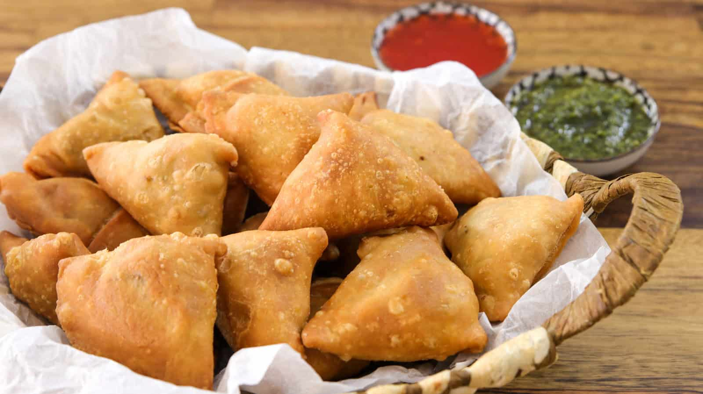

Samosa
Golden, crisp, and stuffed with a spiced savory filling — Samosas are the ultimate snack or appetizer, perfect for parties, tea time, or whenever you crave something deliciously crunchy.
Preparation:
40-50 minutes active prep
Rest Time:
30 minutes (for dough resting)
Cook:
20-30 minutes (frying)
Total:
About 1.5-2 hours
Ingredients:
For the Dough:
- 2 cups (250g) all-purpose flour
- 4 tablespoons oil or ghee
- 1/2 teaspoon salt
- Water, as needed (about 1/2 cup)
For the Filling:
- 3-4 medium potatoes, boiled, peeled, and mashed
- 1/2 cup green peas (fresh or frozen)
- 2 tablespoons oil
- 1 teaspoon cumin seeds
- 1 teaspoon mustard seeds (optional)
- 2 green chilies, finely chopped (adjust to taste)
- 1 tablespoon grated fresh ginger
- 1 teaspoon ground coriander
- 1 teaspoon garam masala
- 1/2 teaspoon turmeric
- 1/2 teaspoon chili powder
- Salt, to taste
- Fresh cilantro, chopped
- Oil, for deep frying
Instructions:
- In a large bowl, mix the flour, salt, and oil. Rub the oil into the flour until it resembles coarse crumbs. Gradually add water, kneading into a firm, smooth dough. Cover and let rest for 30 minutes.
- For the filling, heat oil in a pan over medium heat. Add cumin seeds and mustard seeds (if using) and let them pop.
- Add green chilies and ginger, sauté for a minute. Then add peas and cook until tender.
- Add mashed potatoes, coriander powder, garam masala, turmeric, chili powder, and salt. Mix well and cook for 2-3 minutes. Stir in chopped cilantro and let the filling cool.
- Divide the dough into golf ball-sized portions. Roll each into an oval shape about 6 inches long. Cut each oval in half to make two pieces.
- Take one half, form a cone by folding and sealing the straight edge with water. Fill the cone with the potato filling, then seal the top edge tightly with water.
- Heat oil in a deep pan over medium heat. Fry the samosas in batches, turning occasionally, until golden and crisp, about 8-10 minutes per batch.
- Drain on paper towels and serve hot with mint chutney or tamarind chutney.